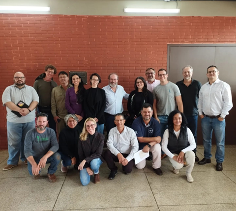

SERPENTÁRIO EM LONDRINA
O serpentário é uma parceria com a UEL, Butantan e instituto Vital Brazil, ele promove a preservação e resgate de serpentes que são encontradas fora de seu habitat.

Em entrevista com a professora especializada em herpetofauna, Mariana Grotti, descobrimos mais sobre este projeto, que de acordo com ela, das serpentes resgatadas, aquelas que não tiverem condições de se adaptar novamente ao meio ambiente, serão encaminhadas para o serpentário. O projeto prevê que isto ocorra dentro da UEL para preservação da vida destas serpentes.
A ideia é que esses répteis resgatados sirvam para aumentar a variabilidade genética das espécies do Butantan. O resgate e uso para pesquisas teria o fim de produção de soros antiofídicos como rede de apoio ao Butantan que produz esse soro que serve como um medicamento para tratar as picadas de serpentes peçonhentas.
O projeto também propõe o mapeamento das reservas da região para saber se elas têm suporte, ou seja, capacidade de manter as serpentes de forma aceitável nesse hábitat, além de reconhecer a necessidade de treinamento e conscientização para situações em que se encontram estas cobras em região urbana ou rural, fora do local de origem onde essas serpentes vivem.
Por fim o suporte de dúvidas e chamados para resgate desses animais será feito via aplicativo. Muitas reuniões já foram realizadas a fim de tornar este projeto viável. A ideia era realizar um evento/reunião para movimentar este projeto já em setembro, mas devido à falta de tempo foi adiado para ano que vem (2024).
Data da Publicação: setembro de 2023